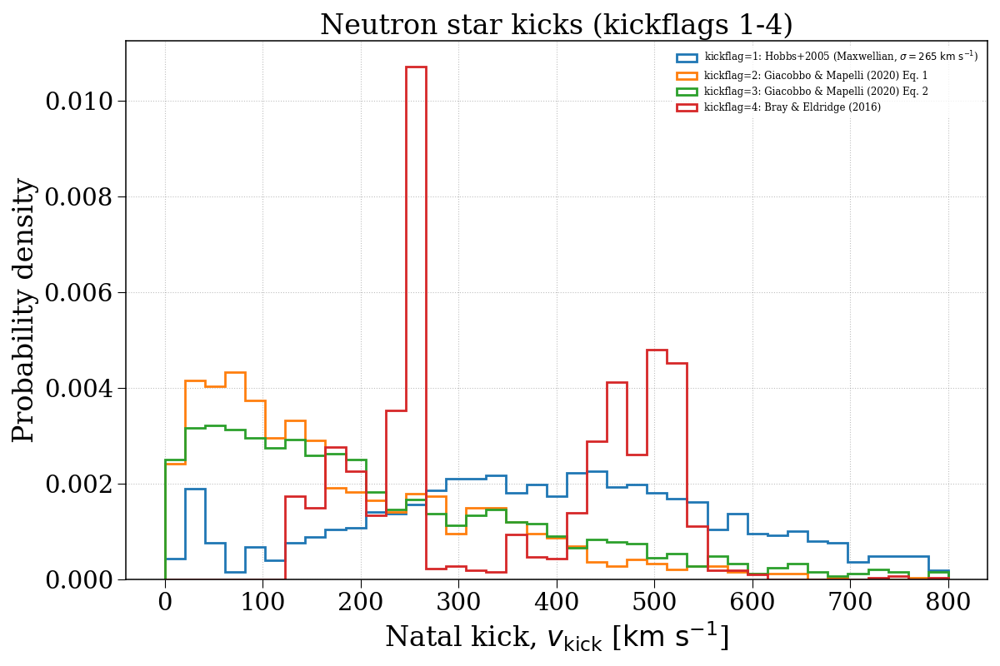
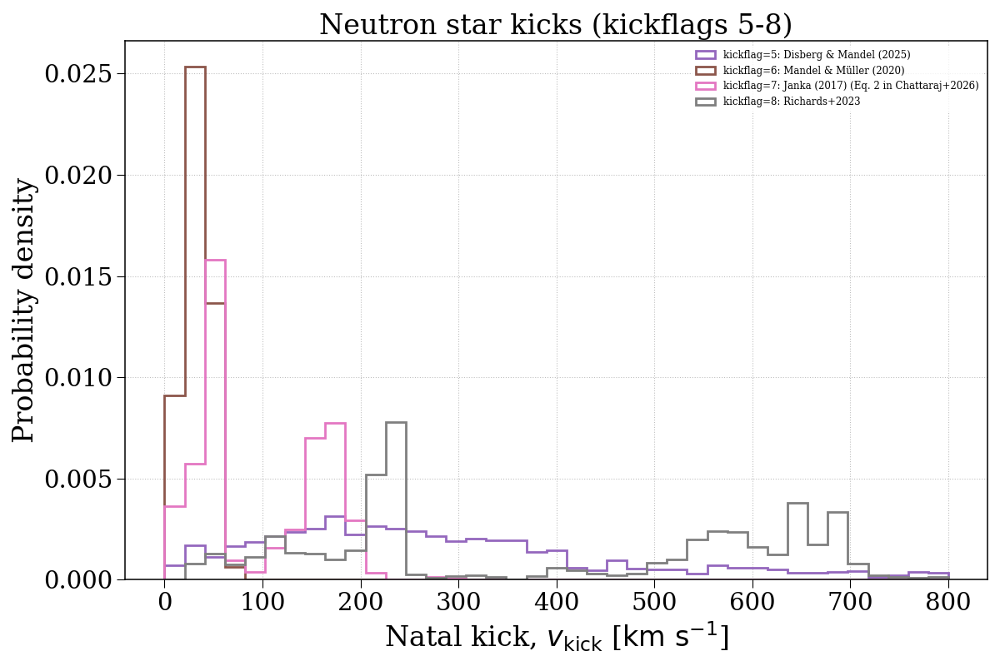
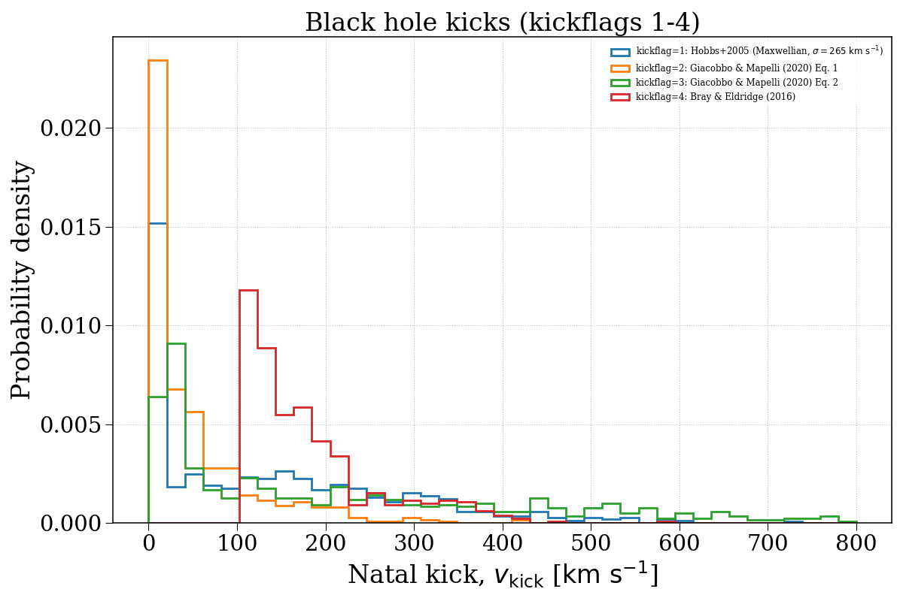
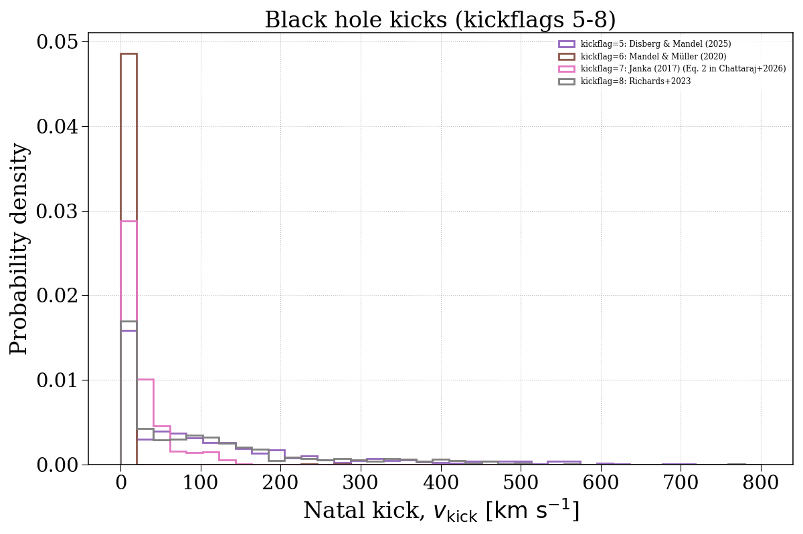

Note
Go to the end to download the full example code.
kickflag¶
This example demonstrates how changing the kickflag parameter can affect the natal kick velocity distributions of compact objects. We separate this into neutron stars and black holes.




Evolving population with kickflag = 1...
Evolving: 0%| | 0/2012 [00:00<?, ?sys/s]
Evolving: 1%| | 23/2012 [00:00<00:09, 220.24sys/s]
Evolving: 2%|▏ | 50/2012 [00:00<00:07, 246.94sys/s]
Evolving: 4%|▎ | 75/2012 [00:00<00:10, 185.67sys/s]
Evolving: 5%|▍ | 98/2012 [00:00<00:11, 162.17sys/s]
Evolving: 7%|▋ | 137/2012 [00:00<00:08, 215.97sys/s]
Evolving: 8%|▊ | 161/2012 [00:00<00:09, 187.20sys/s]
Evolving: 10%|▉ | 193/2012 [00:00<00:08, 215.52sys/s]
Evolving: 11%|█ | 217/2012 [00:01<00:08, 213.49sys/s]
Evolving: 12%|█▏ | 240/2012 [00:01<00:08, 216.51sys/s]
Evolving: 13%|█▎ | 263/2012 [00:01<00:08, 211.92sys/s]
Evolving: 14%|█▍ | 285/2012 [00:01<00:09, 175.37sys/s]
Evolving: 16%|█▌ | 318/2012 [00:01<00:10, 169.07sys/s]
Evolving: 18%|█▊ | 358/2012 [00:01<00:07, 215.83sys/s]
Evolving: 19%|█▉ | 382/2012 [00:01<00:08, 200.23sys/s]
Evolving: 20%|██ | 404/2012 [00:02<00:08, 200.55sys/s]
Evolving: 21%|██▏ | 428/2012 [00:02<00:07, 205.11sys/s]
Evolving: 22%|██▏ | 450/2012 [00:02<00:07, 197.11sys/s]
Evolving: 24%|██▍ | 478/2012 [00:02<00:07, 201.04sys/s]
Evolving: 25%|██▍ | 499/2012 [00:02<00:08, 175.59sys/s]
Evolving: 26%|██▌ | 522/2012 [00:02<00:07, 187.63sys/s]
Evolving: 27%|██▋ | 542/2012 [00:02<00:08, 181.26sys/s]
Evolving: 28%|██▊ | 561/2012 [00:02<00:09, 156.67sys/s]
Evolving: 30%|██▉ | 598/2012 [00:03<00:07, 201.34sys/s]
Evolving: 31%|███ | 623/2012 [00:03<00:06, 210.22sys/s]
Evolving: 32%|███▏ | 646/2012 [00:03<00:06, 212.75sys/s]
Evolving: 33%|███▎ | 670/2012 [00:03<00:06, 213.83sys/s]
Evolving: 34%|███▍ | 692/2012 [00:03<00:06, 190.18sys/s]
Evolving: 35%|███▌ | 712/2012 [00:03<00:07, 173.96sys/s]
Evolving: 37%|███▋ | 748/2012 [00:03<00:05, 219.73sys/s]
Evolving: 38%|███▊ | 772/2012 [00:03<00:05, 216.21sys/s]
Evolving: 40%|███▉ | 798/2012 [00:04<00:05, 219.29sys/s]
Evolving: 41%|████ | 821/2012 [00:04<00:05, 209.38sys/s]
Evolving: 42%|████▏ | 843/2012 [00:04<00:06, 171.68sys/s]
Evolving: 43%|████▎ | 866/2012 [00:04<00:06, 184.44sys/s]
Evolving: 44%|████▍ | 891/2012 [00:04<00:07, 158.48sys/s]
Evolving: 46%|████▌ | 929/2012 [00:04<00:05, 206.41sys/s]
Evolving: 47%|████▋ | 953/2012 [00:04<00:05, 184.87sys/s]
Evolving: 48%|████▊ | 974/2012 [00:05<00:06, 172.96sys/s]
Evolving: 50%|█████ | 1016/2012 [00:05<00:04, 227.03sys/s]
Evolving: 52%|█████▏ | 1042/2012 [00:05<00:04, 218.40sys/s]
Evolving: 53%|█████▎ | 1066/2012 [00:05<00:05, 182.03sys/s]
Evolving: 55%|█████▍ | 1097/2012 [00:05<00:04, 208.93sys/s]
Evolving: 56%|█████▌ | 1122/2012 [00:05<00:04, 216.77sys/s]
Evolving: 57%|█████▋ | 1146/2012 [00:05<00:05, 172.32sys/s]
Evolving: 58%|█████▊ | 1170/2012 [00:06<00:04, 170.72sys/s]
Evolving: 60%|██████ | 1212/2012 [00:06<00:03, 221.09sys/s]
Evolving: 61%|██████▏ | 1237/2012 [00:06<00:04, 184.03sys/s]
Evolving: 63%|██████▎ | 1268/2012 [00:06<00:03, 194.25sys/s]
Evolving: 65%|██████▍ | 1302/2012 [00:06<00:03, 220.20sys/s]
Evolving: 66%|██████▌ | 1326/2012 [00:06<00:03, 224.19sys/s]
Evolving: 67%|██████▋ | 1350/2012 [00:06<00:02, 224.35sys/s]
Evolving: 68%|██████▊ | 1374/2012 [00:06<00:02, 224.86sys/s]
Evolving: 69%|██████▉ | 1398/2012 [00:07<00:03, 204.38sys/s]
Evolving: 71%|███████ | 1420/2012 [00:07<00:03, 180.08sys/s]
Evolving: 72%|███████▏ | 1440/2012 [00:07<00:03, 179.44sys/s]
Evolving: 73%|███████▎ | 1474/2012 [00:07<00:02, 218.50sys/s]
Evolving: 74%|███████▍ | 1498/2012 [00:07<00:02, 212.14sys/s]
Evolving: 76%|███████▌ | 1521/2012 [00:07<00:02, 207.06sys/s]
Evolving: 77%|███████▋ | 1544/2012 [00:07<00:02, 209.43sys/s]
Evolving: 78%|███████▊ | 1566/2012 [00:07<00:02, 195.43sys/s]
Evolving: 79%|███████▉ | 1589/2012 [00:08<00:02, 191.01sys/s]
Evolving: 80%|████████ | 1610/2012 [00:08<00:02, 189.70sys/s]
Evolving: 81%|████████ | 1633/2012 [00:08<00:02, 188.22sys/s]
Evolving: 83%|████████▎ | 1664/2012 [00:08<00:01, 216.22sys/s]
Evolving: 84%|████████▍ | 1686/2012 [00:08<00:01, 169.89sys/s]
Evolving: 86%|████████▌ | 1722/2012 [00:08<00:01, 213.57sys/s]
Evolving: 87%|████████▋ | 1746/2012 [00:08<00:01, 201.33sys/s]
Evolving: 88%|████████▊ | 1768/2012 [00:09<00:01, 169.70sys/s]
Evolving: 90%|████████▉ | 1810/2012 [00:09<00:00, 208.85sys/s]
Evolving: 91%|█████████▏| 1839/2012 [00:09<00:00, 179.80sys/s]
Evolving: 93%|█████████▎| 1877/2012 [00:09<00:00, 218.93sys/s]
Evolving: 95%|█████████▍| 1902/2012 [00:09<00:00, 205.53sys/s]
Evolving: 96%|█████████▌| 1925/2012 [00:09<00:00, 172.59sys/s]
Evolving: 97%|█████████▋| 1952/2012 [00:09<00:00, 191.40sys/s]
Evolving: 98%|█████████▊| 1980/2012 [00:10<00:00, 209.57sys/s]
Evolving: 100%|█████████▉| 2003/2012 [00:10<00:00, 183.14sys/s]
Evolving: 100%|██████████| 2012/2012 [00:10<00:00, 197.52sys/s]
[Time taken: 10.3826 seconds]
Evolving population with kickflag = 2...
Evolving: 0%| | 0/2012 [00:00<?, ?sys/s]
Evolving: 0%| | 6/2012 [00:00<00:37, 53.39sys/s]
Evolving: 2%|▏ | 33/2012 [00:00<00:11, 172.62sys/s]
Evolving: 3%|▎ | 54/2012 [00:00<00:10, 188.96sys/s]
Evolving: 4%|▎ | 74/2012 [00:00<00:12, 157.49sys/s]
Evolving: 5%|▍ | 98/2012 [00:00<00:12, 150.14sys/s]
Evolving: 7%|▋ | 140/2012 [00:00<00:08, 217.59sys/s]
Evolving: 8%|▊ | 164/2012 [00:00<00:09, 188.37sys/s]
Evolving: 9%|▉ | 191/2012 [00:01<00:08, 202.58sys/s]
Evolving: 11%|█ | 213/2012 [00:01<00:08, 206.55sys/s]
Evolving: 12%|█▏ | 238/2012 [00:01<00:08, 211.39sys/s]
Evolving: 13%|█▎ | 260/2012 [00:01<00:08, 206.56sys/s]
Evolving: 14%|█▍ | 282/2012 [00:01<00:09, 182.41sys/s]
Evolving: 16%|█▌ | 315/2012 [00:01<00:08, 208.80sys/s]
Evolving: 17%|█▋ | 337/2012 [00:01<00:08, 202.62sys/s]
Evolving: 18%|█▊ | 358/2012 [00:01<00:08, 201.06sys/s]
Evolving: 19%|█▉ | 379/2012 [00:02<00:08, 183.23sys/s]
Evolving: 20%|█▉ | 402/2012 [00:02<00:08, 195.14sys/s]
Evolving: 21%|██ | 423/2012 [00:02<00:08, 198.11sys/s]
Evolving: 22%|██▏ | 444/2012 [00:02<00:07, 196.22sys/s]
Evolving: 23%|██▎ | 469/2012 [00:02<00:07, 210.13sys/s]
Evolving: 24%|██▍ | 491/2012 [00:02<00:08, 179.19sys/s]
Evolving: 25%|██▌ | 510/2012 [00:02<00:08, 168.30sys/s]
Evolving: 26%|██▋ | 530/2012 [00:02<00:08, 174.57sys/s]
Evolving: 28%|██▊ | 554/2012 [00:03<00:09, 145.83sys/s]
Evolving: 29%|██▉ | 588/2012 [00:03<00:07, 188.75sys/s]
Evolving: 31%|███ | 620/2012 [00:03<00:06, 215.50sys/s]
Evolving: 32%|███▏ | 645/2012 [00:03<00:06, 223.17sys/s]
Evolving: 33%|███▎ | 669/2012 [00:03<00:06, 221.95sys/s]
Evolving: 34%|███▍ | 693/2012 [00:03<00:06, 204.18sys/s]
Evolving: 36%|███▌ | 715/2012 [00:03<00:06, 186.93sys/s]
Evolving: 37%|███▋ | 742/2012 [00:03<00:06, 206.65sys/s]
Evolving: 38%|███▊ | 765/2012 [00:03<00:05, 209.33sys/s]
Evolving: 39%|███▉ | 791/2012 [00:04<00:05, 218.75sys/s]
Evolving: 40%|████ | 814/2012 [00:04<00:06, 197.65sys/s]
Evolving: 42%|████▏ | 835/2012 [00:04<00:06, 168.49sys/s]
Evolving: 42%|████▏ | 853/2012 [00:04<00:06, 170.95sys/s]
Evolving: 44%|████▍ | 885/2012 [00:04<00:05, 202.29sys/s]
Evolving: 45%|████▌ | 907/2012 [00:04<00:05, 192.16sys/s]
Evolving: 46%|████▋ | 932/2012 [00:04<00:05, 206.85sys/s]
Evolving: 47%|████▋ | 954/2012 [00:04<00:05, 177.40sys/s]
Evolving: 48%|████▊ | 973/2012 [00:05<00:06, 170.31sys/s]
Evolving: 50%|█████ | 1008/2012 [00:05<00:04, 208.82sys/s]
Evolving: 51%|█████▏ | 1032/2012 [00:05<00:04, 214.97sys/s]
Evolving: 52%|█████▏ | 1055/2012 [00:05<00:04, 209.49sys/s]
Evolving: 54%|█████▎ | 1077/2012 [00:05<00:04, 191.72sys/s]
Evolving: 55%|█████▍ | 1102/2012 [00:05<00:04, 205.18sys/s]
Evolving: 56%|█████▌ | 1128/2012 [00:05<00:04, 217.63sys/s]
Evolving: 57%|█████▋ | 1151/2012 [00:05<00:04, 172.75sys/s]
Evolving: 58%|█████▊ | 1171/2012 [00:06<00:05, 163.18sys/s]
Evolving: 60%|██████ | 1211/2012 [00:06<00:03, 211.38sys/s]
Evolving: 61%|██████▏ | 1234/2012 [00:06<00:04, 173.07sys/s]
Evolving: 63%|██████▎ | 1268/2012 [00:06<00:03, 198.80sys/s]
Evolving: 65%|██████▍ | 1299/2012 [00:06<00:03, 220.59sys/s]
Evolving: 66%|██████▌ | 1323/2012 [00:06<00:03, 215.11sys/s]
Evolving: 67%|██████▋ | 1350/2012 [00:06<00:02, 228.62sys/s]
Evolving: 68%|██████▊ | 1375/2012 [00:07<00:02, 229.57sys/s]
Evolving: 70%|██████▉ | 1399/2012 [00:07<00:02, 225.46sys/s]
Evolving: 71%|███████ | 1423/2012 [00:07<00:03, 184.22sys/s]
Evolving: 72%|███████▏ | 1443/2012 [00:07<00:03, 182.30sys/s]
Evolving: 73%|███████▎ | 1475/2012 [00:07<00:02, 213.05sys/s]
Evolving: 75%|███████▍ | 1499/2012 [00:07<00:02, 215.65sys/s]
Evolving: 76%|███████▌ | 1522/2012 [00:07<00:02, 203.61sys/s]
Evolving: 77%|███████▋ | 1544/2012 [00:07<00:02, 204.67sys/s]
Evolving: 78%|███████▊ | 1565/2012 [00:08<00:02, 191.53sys/s]
Evolving: 79%|███████▉ | 1589/2012 [00:08<00:02, 199.83sys/s]
Evolving: 80%|████████ | 1610/2012 [00:08<00:02, 188.51sys/s]
Evolving: 81%|████████ | 1633/2012 [00:08<00:01, 190.78sys/s]
Evolving: 83%|████████▎ | 1663/2012 [00:08<00:01, 217.36sys/s]
Evolving: 84%|████████▍ | 1686/2012 [00:08<00:01, 168.07sys/s]
Evolving: 86%|████████▌ | 1723/2012 [00:08<00:01, 212.90sys/s]
Evolving: 87%|████████▋ | 1747/2012 [00:08<00:01, 202.38sys/s]
Evolving: 88%|████████▊ | 1770/2012 [00:09<00:01, 175.53sys/s]
Evolving: 90%|████████▉ | 1809/2012 [00:09<00:00, 222.03sys/s]
Evolving: 91%|█████████ | 1834/2012 [00:09<00:00, 219.32sys/s]
Evolving: 92%|█████████▏| 1858/2012 [00:09<00:00, 198.29sys/s]
Evolving: 93%|█████████▎| 1880/2012 [00:09<00:00, 201.82sys/s]
Evolving: 95%|█████████▍| 1902/2012 [00:09<00:00, 184.21sys/s]
Evolving: 96%|█████████▌| 1922/2012 [00:09<00:00, 156.85sys/s]
Evolving: 96%|█████████▋| 1939/2012 [00:10<00:00, 156.20sys/s]
Evolving: 98%|█████████▊| 1980/2012 [00:10<00:00, 210.70sys/s]
Evolving: 100%|█████████▉| 2003/2012 [00:10<00:00, 185.10sys/s]
Evolving: 100%|██████████| 2012/2012 [00:10<00:00, 195.55sys/s]
[Time taken: 10.4134 seconds]
Evolving population with kickflag = 3...
Evolving: 0%| | 0/2012 [00:00<?, ?sys/s]
Evolving: 0%| | 6/2012 [00:00<00:37, 53.66sys/s]
Evolving: 2%|▏ | 35/2012 [00:00<00:10, 184.61sys/s]
Evolving: 3%|▎ | 59/2012 [00:00<00:09, 204.05sys/s]
Evolving: 4%|▍ | 80/2012 [00:00<00:10, 182.07sys/s]
Evolving: 5%|▍ | 99/2012 [00:00<00:12, 150.23sys/s]
Evolving: 7%|▋ | 138/2012 [00:00<00:08, 210.93sys/s]
Evolving: 8%|▊ | 161/2012 [00:00<00:10, 179.94sys/s]
Evolving: 9%|▉ | 191/2012 [00:01<00:08, 207.42sys/s]
Evolving: 11%|█ | 214/2012 [00:01<00:08, 205.84sys/s]
Evolving: 12%|█▏ | 236/2012 [00:01<00:08, 207.36sys/s]
Evolving: 13%|█▎ | 260/2012 [00:01<00:08, 205.56sys/s]
Evolving: 14%|█▍ | 282/2012 [00:01<00:09, 185.51sys/s]
Evolving: 16%|█▌ | 315/2012 [00:01<00:08, 208.38sys/s]
Evolving: 17%|█▋ | 337/2012 [00:01<00:08, 202.94sys/s]
Evolving: 18%|█▊ | 358/2012 [00:01<00:08, 197.92sys/s]
Evolving: 19%|█▉ | 378/2012 [00:01<00:08, 188.82sys/s]
Evolving: 20%|█▉ | 398/2012 [00:02<00:08, 184.41sys/s]
Evolving: 21%|██ | 424/2012 [00:02<00:08, 195.30sys/s]
Evolving: 22%|██▏ | 449/2012 [00:02<00:07, 208.68sys/s]
Evolving: 23%|██▎ | 471/2012 [00:02<00:07, 206.46sys/s]
Evolving: 24%|██▍ | 492/2012 [00:02<00:09, 166.60sys/s]
Evolving: 25%|██▌ | 510/2012 [00:02<00:09, 164.40sys/s]
Evolving: 26%|██▋ | 530/2012 [00:02<00:08, 171.83sys/s]
Evolving: 28%|██▊ | 554/2012 [00:03<00:09, 148.15sys/s]
Evolving: 30%|██▉ | 598/2012 [00:03<00:06, 206.83sys/s]
Evolving: 31%|███ | 622/2012 [00:03<00:06, 212.58sys/s]
Evolving: 32%|███▏ | 645/2012 [00:03<00:06, 213.37sys/s]
Evolving: 33%|███▎ | 668/2012 [00:03<00:06, 215.49sys/s]
Evolving: 34%|███▍ | 691/2012 [00:03<00:06, 189.73sys/s]
Evolving: 35%|███▌ | 711/2012 [00:03<00:07, 175.18sys/s]
Evolving: 37%|███▋ | 745/2012 [00:03<00:05, 215.20sys/s]
Evolving: 38%|███▊ | 768/2012 [00:03<00:05, 212.65sys/s]
Evolving: 39%|███▉ | 794/2012 [00:04<00:05, 216.33sys/s]
Evolving: 41%|████ | 817/2012 [00:04<00:05, 206.43sys/s]
Evolving: 42%|████▏ | 839/2012 [00:04<00:06, 178.23sys/s]
Evolving: 43%|████▎ | 859/2012 [00:04<00:06, 180.28sys/s]
Evolving: 44%|████▍ | 885/2012 [00:04<00:05, 200.31sys/s]
Evolving: 45%|████▌ | 906/2012 [00:04<00:06, 182.80sys/s]
Evolving: 46%|████▋ | 935/2012 [00:04<00:05, 207.77sys/s]
Evolving: 48%|████▊ | 957/2012 [00:04<00:05, 183.80sys/s]
Evolving: 49%|████▊ | 977/2012 [00:05<00:05, 175.73sys/s]
Evolving: 50%|█████ | 1008/2012 [00:05<00:04, 208.42sys/s]
Evolving: 51%|█████▏ | 1034/2012 [00:05<00:04, 212.99sys/s]
Evolving: 53%|█████▎ | 1057/2012 [00:05<00:04, 214.24sys/s]
Evolving: 54%|█████▎ | 1079/2012 [00:05<00:04, 195.22sys/s]
Evolving: 55%|█████▍ | 1101/2012 [00:05<00:04, 200.08sys/s]
Evolving: 56%|█████▌ | 1126/2012 [00:05<00:04, 212.75sys/s]
Evolving: 57%|█████▋ | 1148/2012 [00:05<00:05, 166.05sys/s]
Evolving: 58%|█████▊ | 1170/2012 [00:06<00:05, 156.77sys/s]
Evolving: 60%|██████ | 1214/2012 [00:06<00:03, 218.57sys/s]
Evolving: 62%|██████▏ | 1239/2012 [00:06<00:04, 183.39sys/s]
Evolving: 63%|██████▎ | 1268/2012 [00:06<00:03, 198.74sys/s]
Evolving: 64%|██████▍ | 1297/2012 [00:06<00:03, 215.06sys/s]
Evolving: 66%|██████▌ | 1323/2012 [00:06<00:03, 222.15sys/s]
Evolving: 67%|██████▋ | 1349/2012 [00:06<00:02, 227.96sys/s]
Evolving: 68%|██████▊ | 1373/2012 [00:06<00:02, 230.47sys/s]
Evolving: 69%|██████▉ | 1397/2012 [00:07<00:02, 219.32sys/s]
Evolving: 71%|███████ | 1420/2012 [00:07<00:03, 182.59sys/s]
Evolving: 72%|███████▏ | 1440/2012 [00:07<00:03, 179.77sys/s]
Evolving: 73%|███████▎ | 1475/2012 [00:07<00:02, 219.82sys/s]
Evolving: 75%|███████▍ | 1499/2012 [00:07<00:02, 217.64sys/s]
Evolving: 76%|███████▌ | 1522/2012 [00:07<00:02, 209.03sys/s]
Evolving: 77%|███████▋ | 1544/2012 [00:07<00:02, 208.05sys/s]
Evolving: 78%|███████▊ | 1566/2012 [00:07<00:02, 192.03sys/s]
Evolving: 79%|███████▉ | 1592/2012 [00:08<00:02, 204.70sys/s]
Evolving: 80%|████████ | 1613/2012 [00:08<00:02, 194.87sys/s]
Evolving: 81%|████████▏ | 1637/2012 [00:08<00:01, 205.57sys/s]
Evolving: 83%|████████▎ | 1663/2012 [00:08<00:01, 216.00sys/s]
Evolving: 84%|████████▎ | 1685/2012 [00:08<00:02, 160.48sys/s]
Evolving: 86%|████████▌ | 1725/2012 [00:08<00:01, 214.33sys/s]
Evolving: 87%|████████▋ | 1750/2012 [00:08<00:01, 203.44sys/s]
Evolving: 88%|████████▊ | 1773/2012 [00:09<00:01, 174.31sys/s]
Evolving: 90%|████████▉ | 1809/2012 [00:09<00:00, 211.67sys/s]
Evolving: 91%|█████████ | 1833/2012 [00:09<00:00, 206.92sys/s]
Evolving: 92%|█████████▏| 1856/2012 [00:09<00:00, 188.01sys/s]
Evolving: 94%|█████████▎| 1882/2012 [00:09<00:00, 201.83sys/s]
Evolving: 95%|█████████▍| 1904/2012 [00:09<00:00, 191.48sys/s]
Evolving: 96%|█████████▌| 1925/2012 [00:09<00:00, 159.26sys/s]
Evolving: 97%|█████████▋| 1943/2012 [00:10<00:00, 163.55sys/s]
Evolving: 98%|█████████▊| 1975/2012 [00:10<00:00, 200.30sys/s]
Evolving: 99%|█████████▉| 1999/2012 [00:10<00:00, 174.12sys/s]
Evolving: 100%|██████████| 2012/2012 [00:10<00:00, 195.60sys/s]
[Time taken: 10.4115 seconds]
Evolving population with kickflag = 4...
Evolving: 0%| | 0/2012 [00:00<?, ?sys/s]
Evolving: 0%| | 6/2012 [00:00<00:37, 53.11sys/s]
Evolving: 2%|▏ | 35/2012 [00:00<00:11, 179.20sys/s]
Evolving: 3%|▎ | 59/2012 [00:00<00:09, 201.97sys/s]
Evolving: 4%|▍ | 80/2012 [00:00<00:10, 183.82sys/s]
Evolving: 5%|▍ | 99/2012 [00:00<00:12, 148.34sys/s]
Evolving: 7%|▋ | 140/2012 [00:00<00:08, 215.58sys/s]
Evolving: 8%|▊ | 164/2012 [00:00<00:09, 185.24sys/s]
Evolving: 10%|▉ | 193/2012 [00:01<00:08, 210.02sys/s]
Evolving: 11%|█ | 216/2012 [00:01<00:08, 205.23sys/s]
Evolving: 12%|█▏ | 240/2012 [00:01<00:08, 212.64sys/s]
Evolving: 13%|█▎ | 263/2012 [00:01<00:08, 207.98sys/s]
Evolving: 14%|█▍ | 285/2012 [00:01<00:09, 186.37sys/s]
Evolving: 16%|█▌ | 315/2012 [00:01<00:08, 205.57sys/s]
Evolving: 17%|█▋ | 337/2012 [00:01<00:08, 200.66sys/s]
Evolving: 18%|█▊ | 358/2012 [00:01<00:08, 195.56sys/s]
Evolving: 19%|█▉ | 378/2012 [00:01<00:08, 188.11sys/s]
Evolving: 20%|█▉ | 397/2012 [00:02<00:08, 185.59sys/s]
Evolving: 21%|██ | 422/2012 [00:02<00:08, 198.67sys/s]
Evolving: 22%|██▏ | 444/2012 [00:02<00:07, 204.35sys/s]
Evolving: 23%|██▎ | 465/2012 [00:02<00:07, 205.35sys/s]
Evolving: 24%|██▍ | 486/2012 [00:02<00:09, 164.00sys/s]
Evolving: 25%|██▌ | 504/2012 [00:02<00:09, 152.03sys/s]
Evolving: 27%|██▋ | 539/2012 [00:02<00:07, 188.29sys/s]
Evolving: 28%|██▊ | 559/2012 [00:03<00:09, 155.42sys/s]
Evolving: 30%|██▉ | 602/2012 [00:03<00:06, 210.63sys/s]
Evolving: 31%|███ | 627/2012 [00:03<00:06, 209.68sys/s]
Evolving: 32%|███▏ | 653/2012 [00:03<00:06, 215.25sys/s]
Evolving: 34%|███▎ | 677/2012 [00:03<00:06, 221.42sys/s]
Evolving: 35%|███▍ | 701/2012 [00:03<00:06, 207.32sys/s]
Evolving: 36%|███▌ | 723/2012 [00:03<00:06, 196.78sys/s]
Evolving: 37%|███▋ | 747/2012 [00:03<00:06, 203.19sys/s]
Evolving: 38%|███▊ | 769/2012 [00:03<00:06, 201.81sys/s]
Evolving: 39%|███▉ | 790/2012 [00:04<00:06, 203.01sys/s]
Evolving: 40%|████ | 811/2012 [00:04<00:06, 187.25sys/s]
Evolving: 41%|████▏ | 831/2012 [00:04<00:07, 158.16sys/s]
Evolving: 43%|████▎ | 862/2012 [00:04<00:05, 192.85sys/s]
Evolving: 44%|████▍ | 885/2012 [00:04<00:05, 197.24sys/s]
Evolving: 45%|████▌ | 906/2012 [00:04<00:05, 193.69sys/s]
Evolving: 46%|████▋ | 931/2012 [00:04<00:05, 204.26sys/s]
Evolving: 47%|████▋ | 952/2012 [00:04<00:05, 181.49sys/s]
Evolving: 48%|████▊ | 971/2012 [00:05<00:06, 168.48sys/s]
Evolving: 50%|█████ | 1008/2012 [00:05<00:04, 211.36sys/s]
Evolving: 51%|█████▏ | 1036/2012 [00:05<00:04, 227.86sys/s]
Evolving: 53%|█████▎ | 1060/2012 [00:05<00:04, 221.49sys/s]
Evolving: 54%|█████▍ | 1083/2012 [00:05<00:04, 189.76sys/s]
Evolving: 55%|█████▌ | 1112/2012 [00:05<00:04, 206.66sys/s]
Evolving: 57%|█████▋ | 1137/2012 [00:05<00:04, 203.72sys/s]
Evolving: 58%|█████▊ | 1159/2012 [00:05<00:04, 191.15sys/s]
Evolving: 59%|█████▊ | 1179/2012 [00:06<00:04, 171.67sys/s]
Evolving: 60%|██████ | 1213/2012 [00:06<00:03, 207.20sys/s]
Evolving: 61%|██████▏ | 1235/2012 [00:06<00:04, 166.87sys/s]
Evolving: 63%|██████▎ | 1268/2012 [00:06<00:03, 195.30sys/s]
Evolving: 65%|██████▍ | 1299/2012 [00:06<00:03, 218.89sys/s]
Evolving: 66%|██████▌ | 1323/2012 [00:06<00:03, 222.99sys/s]
Evolving: 67%|██████▋ | 1348/2012 [00:06<00:02, 227.20sys/s]
Evolving: 68%|██████▊ | 1372/2012 [00:06<00:02, 230.09sys/s]
Evolving: 69%|██████▉ | 1396/2012 [00:07<00:02, 217.02sys/s]
Evolving: 71%|███████ | 1420/2012 [00:07<00:03, 184.91sys/s]
Evolving: 72%|███████▏ | 1440/2012 [00:07<00:03, 182.05sys/s]
Evolving: 73%|███████▎ | 1475/2012 [00:07<00:02, 223.10sys/s]
Evolving: 75%|███████▍ | 1499/2012 [00:07<00:02, 221.60sys/s]
Evolving: 76%|███████▌ | 1523/2012 [00:07<00:02, 206.30sys/s]
Evolving: 77%|███████▋ | 1546/2012 [00:07<00:02, 207.31sys/s]
Evolving: 78%|███████▊ | 1568/2012 [00:07<00:02, 200.65sys/s]
Evolving: 79%|███████▉ | 1589/2012 [00:08<00:02, 202.23sys/s]
Evolving: 80%|████████ | 1610/2012 [00:08<00:02, 189.21sys/s]
Evolving: 81%|████████ | 1633/2012 [00:08<00:01, 197.26sys/s]
Evolving: 83%|████████▎ | 1660/2012 [00:08<00:01, 210.09sys/s]
Evolving: 84%|████████▎ | 1684/2012 [00:08<00:01, 216.09sys/s]
Evolving: 85%|████████▍ | 1706/2012 [00:08<00:01, 195.33sys/s]
Evolving: 86%|████████▌ | 1730/2012 [00:08<00:01, 206.69sys/s]
Evolving: 87%|████████▋ | 1752/2012 [00:08<00:01, 201.98sys/s]
Evolving: 88%|████████▊ | 1773/2012 [00:09<00:01, 173.53sys/s]
Evolving: 90%|████████▉ | 1804/2012 [00:09<00:01, 204.83sys/s]
Evolving: 91%|█████████ | 1829/2012 [00:09<00:00, 213.39sys/s]
Evolving: 92%|█████████▏| 1852/2012 [00:09<00:00, 179.61sys/s]
Evolving: 94%|█████████▎| 1883/2012 [00:09<00:00, 210.58sys/s]
Evolving: 95%|█████████▍| 1906/2012 [00:09<00:00, 198.46sys/s]
Evolving: 96%|█████████▌| 1928/2012 [00:09<00:00, 168.61sys/s]
Evolving: 97%|█████████▋| 1956/2012 [00:09<00:00, 192.17sys/s]
Evolving: 98%|█████████▊| 1978/2012 [00:10<00:00, 197.72sys/s]
Evolving: 99%|█████████▉| 2000/2012 [00:10<00:00, 171.20sys/s]
Evolving: 100%|██████████| 2012/2012 [00:10<00:00, 196.77sys/s]
[Time taken: 10.3531 seconds]
Evolving population with kickflag = 5...
Evolving: 0%| | 0/2012 [00:00<?, ?sys/s]
Evolving: 0%| | 6/2012 [00:00<00:41, 48.79sys/s]
Evolving: 2%|▏ | 36/2012 [00:00<00:10, 183.78sys/s]
Evolving: 3%|▎ | 60/2012 [00:00<00:09, 207.35sys/s]
Evolving: 4%|▍ | 82/2012 [00:00<00:10, 187.97sys/s]
Evolving: 5%|▌ | 102/2012 [00:00<00:12, 155.38sys/s]
Evolving: 7%|▋ | 136/2012 [00:00<00:09, 196.06sys/s]
Evolving: 8%|▊ | 157/2012 [00:00<00:10, 172.98sys/s]
Evolving: 9%|▉ | 191/2012 [00:01<00:08, 213.49sys/s]
Evolving: 11%|█ | 215/2012 [00:01<00:08, 204.93sys/s]
Evolving: 12%|█▏ | 240/2012 [00:01<00:08, 214.45sys/s]
Evolving: 13%|█▎ | 263/2012 [00:01<00:08, 211.69sys/s]
Evolving: 14%|█▍ | 285/2012 [00:01<00:08, 192.51sys/s]
Evolving: 16%|█▌ | 315/2012 [00:01<00:07, 213.30sys/s]
Evolving: 17%|█▋ | 337/2012 [00:01<00:08, 203.82sys/s]
Evolving: 18%|█▊ | 358/2012 [00:01<00:08, 199.80sys/s]
Evolving: 19%|█▉ | 379/2012 [00:01<00:08, 185.93sys/s]
Evolving: 20%|█▉ | 398/2012 [00:02<00:08, 186.03sys/s]
Evolving: 21%|██ | 423/2012 [00:02<00:07, 202.23sys/s]
Evolving: 22%|██▏ | 444/2012 [00:02<00:07, 202.72sys/s]
Evolving: 23%|██▎ | 465/2012 [00:02<00:10, 144.77sys/s]
Evolving: 24%|██▍ | 485/2012 [00:02<00:11, 132.78sys/s]
Evolving: 25%|██▌ | 503/2012 [00:02<00:11, 127.65sys/s]
Evolving: 27%|██▋ | 539/2012 [00:02<00:08, 170.43sys/s]
Evolving: 28%|██▊ | 558/2012 [00:03<00:09, 148.43sys/s]
Evolving: 30%|██▉ | 599/2012 [00:03<00:07, 200.75sys/s]
Evolving: 31%|███ | 623/2012 [00:03<00:06, 209.66sys/s]
Evolving: 32%|███▏ | 647/2012 [00:03<00:06, 212.87sys/s]
Evolving: 33%|███▎ | 670/2012 [00:03<00:06, 205.61sys/s]
Evolving: 34%|███▍ | 692/2012 [00:03<00:06, 197.20sys/s]
Evolving: 35%|███▌ | 713/2012 [00:03<00:07, 177.89sys/s]
Evolving: 37%|███▋ | 745/2012 [00:03<00:06, 210.67sys/s]
Evolving: 38%|███▊ | 768/2012 [00:04<00:05, 213.71sys/s]
Evolving: 39%|███▉ | 791/2012 [00:04<00:05, 216.22sys/s]
Evolving: 40%|████ | 814/2012 [00:04<00:06, 196.12sys/s]
Evolving: 42%|████▏ | 835/2012 [00:04<00:06, 171.62sys/s]
Evolving: 43%|████▎ | 859/2012 [00:04<00:06, 184.04sys/s]
Evolving: 44%|████▍ | 885/2012 [00:04<00:05, 198.92sys/s]
Evolving: 45%|████▌ | 906/2012 [00:04<00:05, 192.26sys/s]
Evolving: 46%|████▋ | 931/2012 [00:04<00:05, 206.97sys/s]
Evolving: 47%|████▋ | 953/2012 [00:05<00:06, 176.39sys/s]
Evolving: 48%|████▊ | 972/2012 [00:05<00:06, 169.29sys/s]
Evolving: 50%|█████ | 1008/2012 [00:05<00:04, 213.39sys/s]
Evolving: 51%|█████▏ | 1036/2012 [00:05<00:04, 227.07sys/s]
Evolving: 53%|█████▎ | 1060/2012 [00:05<00:04, 226.14sys/s]
Evolving: 54%|█████▍ | 1084/2012 [00:05<00:04, 192.90sys/s]
Evolving: 55%|█████▌ | 1110/2012 [00:05<00:04, 206.59sys/s]
Evolving: 56%|█████▋ | 1133/2012 [00:05<00:04, 206.36sys/s]
Evolving: 57%|█████▋ | 1155/2012 [00:06<00:04, 180.52sys/s]
Evolving: 58%|█████▊ | 1175/2012 [00:06<00:05, 159.72sys/s]
Evolving: 60%|██████ | 1215/2012 [00:06<00:03, 212.46sys/s]
Evolving: 62%|██████▏ | 1239/2012 [00:06<00:04, 178.38sys/s]
Evolving: 63%|██████▎ | 1268/2012 [00:06<00:03, 194.00sys/s]
Evolving: 65%|██████▍ | 1300/2012 [00:06<00:03, 220.96sys/s]
Evolving: 66%|██████▌ | 1324/2012 [00:06<00:03, 219.76sys/s]
Evolving: 67%|██████▋ | 1348/2012 [00:07<00:03, 221.32sys/s]
Evolving: 68%|██████▊ | 1375/2012 [00:07<00:02, 230.70sys/s]
Evolving: 70%|██████▉ | 1399/2012 [00:07<00:02, 221.82sys/s]
Evolving: 71%|███████ | 1422/2012 [00:07<00:03, 187.13sys/s]
Evolving: 72%|███████▏ | 1442/2012 [00:07<00:03, 181.83sys/s]
Evolving: 73%|███████▎ | 1475/2012 [00:07<00:02, 215.52sys/s]
Evolving: 75%|███████▍ | 1499/2012 [00:07<00:02, 218.87sys/s]
Evolving: 76%|███████▌ | 1522/2012 [00:07<00:02, 205.03sys/s]
Evolving: 77%|███████▋ | 1545/2012 [00:07<00:02, 207.67sys/s]
Evolving: 78%|███████▊ | 1567/2012 [00:08<00:02, 202.92sys/s]
Evolving: 79%|███████▉ | 1589/2012 [00:08<00:02, 197.84sys/s]
Evolving: 80%|████████ | 1610/2012 [00:08<00:02, 188.06sys/s]
Evolving: 81%|████████ | 1633/2012 [00:08<00:01, 196.13sys/s]
Evolving: 82%|████████▏ | 1659/2012 [00:08<00:01, 204.79sys/s]
Evolving: 84%|████████▎ | 1685/2012 [00:08<00:01, 172.45sys/s]
Evolving: 86%|████████▌ | 1723/2012 [00:08<00:01, 220.21sys/s]
Evolving: 87%|████████▋ | 1748/2012 [00:08<00:01, 207.39sys/s]
Evolving: 88%|████████▊ | 1771/2012 [00:09<00:01, 177.65sys/s]
Evolving: 90%|████████▉ | 1809/2012 [00:09<00:00, 222.32sys/s]
Evolving: 91%|█████████ | 1834/2012 [00:09<00:00, 216.30sys/s]
Evolving: 92%|█████████▏| 1858/2012 [00:09<00:00, 197.92sys/s]
Evolving: 94%|█████████▎| 1883/2012 [00:09<00:00, 209.73sys/s]
Evolving: 95%|█████████▍| 1906/2012 [00:09<00:00, 200.93sys/s]
Evolving: 96%|█████████▌| 1927/2012 [00:09<00:00, 165.66sys/s]
Evolving: 97%|█████████▋| 1946/2012 [00:10<00:00, 168.50sys/s]
Evolving: 98%|█████████▊| 1975/2012 [00:10<00:00, 196.52sys/s]
Evolving: 99%|█████████▉| 1999/2012 [00:10<00:00, 175.92sys/s]
Evolving: 100%|██████████| 2012/2012 [00:10<00:00, 194.45sys/s]
[Time taken: 10.4802 seconds]
Evolving population with kickflag = 6...
Evolving: 0%| | 0/2012 [00:00<?, ?sys/s]
Evolving: 0%| | 6/2012 [00:00<00:37, 52.95sys/s]
Evolving: 2%|▏ | 33/2012 [00:00<00:11, 172.76sys/s]
Evolving: 3%|▎ | 55/2012 [00:00<00:10, 190.84sys/s]
Evolving: 4%|▎ | 75/2012 [00:00<00:11, 164.41sys/s]
Evolving: 5%|▍ | 98/2012 [00:00<00:12, 150.75sys/s]
Evolving: 7%|▋ | 137/2012 [00:00<00:08, 214.45sys/s]
Evolving: 8%|▊ | 161/2012 [00:00<00:10, 178.59sys/s]
Evolving: 10%|▉ | 193/2012 [00:01<00:08, 212.69sys/s]
Evolving: 11%|█ | 217/2012 [00:01<00:08, 208.28sys/s]
Evolving: 12%|█▏ | 240/2012 [00:01<00:08, 212.93sys/s]
Evolving: 13%|█▎ | 263/2012 [00:01<00:08, 212.34sys/s]
Evolving: 14%|█▍ | 286/2012 [00:01<00:08, 192.35sys/s]
Evolving: 16%|█▌ | 315/2012 [00:01<00:08, 206.04sys/s]
Evolving: 17%|█▋ | 337/2012 [00:01<00:08, 200.55sys/s]
Evolving: 18%|█▊ | 362/2012 [00:01<00:10, 163.16sys/s]
Evolving: 20%|█▉ | 394/2012 [00:02<00:08, 188.81sys/s]
Evolving: 21%|██ | 422/2012 [00:02<00:07, 205.09sys/s]
Evolving: 22%|██▏ | 445/2012 [00:02<00:07, 210.08sys/s]
Evolving: 23%|██▎ | 468/2012 [00:02<00:07, 210.25sys/s]
Evolving: 24%|██▍ | 490/2012 [00:02<00:08, 174.17sys/s]
Evolving: 25%|██▌ | 509/2012 [00:02<00:09, 160.60sys/s]
Evolving: 27%|██▋ | 539/2012 [00:02<00:08, 181.22sys/s]
Evolving: 28%|██▊ | 558/2012 [00:03<00:09, 153.88sys/s]
Evolving: 30%|██▉ | 597/2012 [00:03<00:06, 205.79sys/s]
Evolving: 31%|███ | 621/2012 [00:03<00:06, 205.80sys/s]
Evolving: 32%|███▏ | 645/2012 [00:03<00:06, 208.61sys/s]
Evolving: 33%|███▎ | 668/2012 [00:03<00:06, 211.78sys/s]
Evolving: 34%|███▍ | 691/2012 [00:03<00:06, 190.72sys/s]
Evolving: 35%|███▌ | 712/2012 [00:03<00:07, 175.15sys/s]
Evolving: 37%|███▋ | 744/2012 [00:03<00:06, 206.20sys/s]
Evolving: 38%|███▊ | 767/2012 [00:03<00:06, 207.01sys/s]
Evolving: 39%|███▉ | 791/2012 [00:04<00:05, 203.82sys/s]
Evolving: 40%|████ | 812/2012 [00:04<00:06, 193.57sys/s]
Evolving: 41%|████▏ | 832/2012 [00:04<00:07, 163.95sys/s]
Evolving: 43%|████▎ | 859/2012 [00:04<00:06, 180.37sys/s]
Evolving: 44%|████▍ | 888/2012 [00:04<00:05, 204.66sys/s]
Evolving: 45%|████▌ | 910/2012 [00:04<00:05, 192.91sys/s]
Evolving: 46%|████▋ | 935/2012 [00:04<00:05, 205.54sys/s]
Evolving: 48%|████▊ | 957/2012 [00:05<00:05, 184.55sys/s]
Evolving: 49%|████▊ | 977/2012 [00:05<00:05, 173.63sys/s]
Evolving: 50%|█████ | 1008/2012 [00:05<00:04, 204.25sys/s]
Evolving: 51%|█████▏ | 1033/2012 [00:05<00:04, 214.48sys/s]
Evolving: 52%|█████▏ | 1056/2012 [00:05<00:04, 206.98sys/s]
Evolving: 54%|█████▎ | 1078/2012 [00:05<00:04, 191.17sys/s]
Evolving: 55%|█████▍ | 1103/2012 [00:05<00:04, 204.03sys/s]
Evolving: 56%|█████▌ | 1125/2012 [00:05<00:04, 208.08sys/s]
Evolving: 57%|█████▋ | 1147/2012 [00:06<00:05, 164.94sys/s]
Evolving: 58%|█████▊ | 1170/2012 [00:06<00:05, 156.19sys/s]
Evolving: 60%|██████ | 1214/2012 [00:06<00:03, 214.93sys/s]
Evolving: 62%|██████▏ | 1238/2012 [00:06<00:04, 181.77sys/s]
Evolving: 63%|██████▎ | 1268/2012 [00:06<00:03, 191.60sys/s]
Evolving: 65%|██████▍ | 1299/2012 [00:06<00:03, 213.11sys/s]
Evolving: 66%|██████▌ | 1323/2012 [00:06<00:03, 216.01sys/s]
Evolving: 67%|██████▋ | 1346/2012 [00:06<00:03, 214.50sys/s]
Evolving: 68%|██████▊ | 1373/2012 [00:07<00:02, 224.95sys/s]
Evolving: 69%|██████▉ | 1397/2012 [00:07<00:02, 211.88sys/s]
Evolving: 71%|███████ | 1420/2012 [00:07<00:03, 180.00sys/s]
Evolving: 72%|███████▏ | 1440/2012 [00:07<00:03, 178.47sys/s]
Evolving: 73%|███████▎ | 1475/2012 [00:07<00:02, 219.41sys/s]
Evolving: 75%|███████▍ | 1499/2012 [00:07<00:02, 213.75sys/s]
Evolving: 76%|███████▌ | 1522/2012 [00:07<00:02, 210.37sys/s]
Evolving: 77%|███████▋ | 1544/2012 [00:07<00:02, 208.53sys/s]
Evolving: 78%|███████▊ | 1566/2012 [00:08<00:02, 197.14sys/s]
Evolving: 79%|███████▉ | 1588/2012 [00:08<00:02, 202.95sys/s]
Evolving: 80%|███████▉ | 1609/2012 [00:08<00:02, 193.93sys/s]
Evolving: 81%|████████ | 1630/2012 [00:08<00:01, 197.29sys/s]
Evolving: 82%|████████▏ | 1653/2012 [00:08<00:01, 202.98sys/s]
Evolving: 83%|████████▎ | 1676/2012 [00:08<00:01, 208.94sys/s]
Evolving: 84%|████████▍ | 1698/2012 [00:08<00:01, 182.53sys/s]
Evolving: 85%|████████▌ | 1719/2012 [00:08<00:01, 186.29sys/s]
Evolving: 87%|████████▋ | 1744/2012 [00:08<00:01, 186.73sys/s]
Evolving: 88%|████████▊ | 1764/2012 [00:09<00:01, 158.16sys/s]
Evolving: 90%|████████▉ | 1808/2012 [00:09<00:00, 221.92sys/s]
Evolving: 91%|█████████ | 1833/2012 [00:09<00:00, 217.00sys/s]
Evolving: 92%|█████████▏| 1857/2012 [00:09<00:00, 195.95sys/s]
Evolving: 93%|█████████▎| 1881/2012 [00:09<00:00, 205.17sys/s]
Evolving: 95%|█████████▍| 1903/2012 [00:09<00:00, 191.98sys/s]
Evolving: 96%|█████████▌| 1924/2012 [00:09<00:00, 162.94sys/s]
Evolving: 97%|█████████▋| 1942/2012 [00:10<00:00, 163.40sys/s]
Evolving: 98%|█████████▊| 1975/2012 [00:10<00:00, 203.39sys/s]
Evolving: 99%|█████████▉| 1999/2012 [00:10<00:00, 175.01sys/s]
Evolving: 100%|██████████| 2012/2012 [00:10<00:00, 194.08sys/s]
[Time taken: 10.5003 seconds]
Evolving population with kickflag = 7...
Evolving: 0%| | 0/2012 [00:00<?, ?sys/s]
Evolving: 0%| | 6/2012 [00:00<00:36, 55.19sys/s]
Evolving: 2%|▏ | 35/2012 [00:00<00:10, 184.77sys/s]
Evolving: 3%|▎ | 55/2012 [00:00<00:10, 189.24sys/s]
Evolving: 4%|▎ | 75/2012 [00:00<00:11, 166.64sys/s]
Evolving: 5%|▍ | 98/2012 [00:00<00:12, 153.43sys/s]
Evolving: 7%|▋ | 136/2012 [00:00<00:08, 214.87sys/s]
Evolving: 8%|▊ | 160/2012 [00:00<00:10, 180.90sys/s]
Evolving: 9%|▉ | 191/2012 [00:01<00:08, 211.42sys/s]
Evolving: 11%|█ | 215/2012 [00:01<00:08, 205.93sys/s]
Evolving: 12%|█▏ | 238/2012 [00:01<00:08, 209.87sys/s]
Evolving: 13%|█▎ | 261/2012 [00:01<00:08, 201.15sys/s]
Evolving: 14%|█▍ | 282/2012 [00:01<00:09, 179.24sys/s]
Evolving: 16%|█▌ | 315/2012 [00:01<00:08, 203.33sys/s]
Evolving: 17%|█▋ | 336/2012 [00:01<00:08, 204.31sys/s]
Evolving: 18%|█▊ | 358/2012 [00:01<00:08, 197.96sys/s]
Evolving: 19%|█▉ | 379/2012 [00:01<00:08, 185.42sys/s]
Evolving: 20%|█▉ | 398/2012 [00:02<00:08, 179.80sys/s]
Evolving: 21%|██ | 424/2012 [00:02<00:07, 199.90sys/s]
Evolving: 22%|██▏ | 445/2012 [00:02<00:07, 199.68sys/s]
Evolving: 23%|██▎ | 468/2012 [00:02<00:07, 206.23sys/s]
Evolving: 24%|██▍ | 489/2012 [00:02<00:08, 171.04sys/s]
Evolving: 25%|██▌ | 508/2012 [00:02<00:09, 162.73sys/s]
Evolving: 26%|██▋ | 530/2012 [00:02<00:08, 174.17sys/s]
Evolving: 28%|██▊ | 554/2012 [00:03<00:09, 146.86sys/s]
Evolving: 30%|██▉ | 598/2012 [00:03<00:06, 208.50sys/s]
Evolving: 31%|███ | 623/2012 [00:03<00:06, 211.73sys/s]
Evolving: 32%|███▏ | 647/2012 [00:03<00:06, 217.60sys/s]
Evolving: 33%|███▎ | 671/2012 [00:03<00:06, 215.05sys/s]
Evolving: 34%|███▍ | 694/2012 [00:03<00:06, 204.11sys/s]
Evolving: 36%|███▌ | 716/2012 [00:03<00:06, 187.00sys/s]
Evolving: 37%|███▋ | 743/2012 [00:03<00:06, 206.95sys/s]
Evolving: 38%|███▊ | 765/2012 [00:03<00:06, 206.08sys/s]
Evolving: 39%|███▉ | 792/2012 [00:04<00:05, 218.98sys/s]
Evolving: 41%|████ | 815/2012 [00:04<00:06, 196.26sys/s]
Evolving: 42%|████▏ | 836/2012 [00:04<00:06, 175.47sys/s]
Evolving: 43%|████▎ | 859/2012 [00:04<00:06, 185.08sys/s]
Evolving: 44%|████▍ | 885/2012 [00:04<00:05, 201.71sys/s]
Evolving: 45%|████▌ | 906/2012 [00:04<00:05, 185.72sys/s]
Evolving: 46%|████▋ | 933/2012 [00:04<00:05, 207.26sys/s]
Evolving: 47%|████▋ | 955/2012 [00:04<00:05, 181.77sys/s]
Evolving: 48%|████▊ | 975/2012 [00:05<00:06, 170.50sys/s]
Evolving: 50%|█████ | 1008/2012 [00:05<00:04, 205.32sys/s]
Evolving: 51%|█████▏ | 1033/2012 [00:05<00:04, 212.58sys/s]
Evolving: 52%|█████▏ | 1056/2012 [00:05<00:04, 204.91sys/s]
Evolving: 54%|█████▎ | 1078/2012 [00:05<00:05, 186.32sys/s]
Evolving: 55%|█████▍ | 1103/2012 [00:05<00:04, 201.65sys/s]
Evolving: 56%|█████▌ | 1125/2012 [00:05<00:04, 206.09sys/s]
Evolving: 57%|█████▋ | 1147/2012 [00:06<00:05, 166.35sys/s]
Evolving: 58%|█████▊ | 1170/2012 [00:06<00:05, 157.12sys/s]
Evolving: 60%|██████ | 1214/2012 [00:06<00:03, 218.16sys/s]
Evolving: 62%|██████▏ | 1239/2012 [00:06<00:04, 182.34sys/s]
Evolving: 63%|██████▎ | 1268/2012 [00:06<00:03, 198.42sys/s]
Evolving: 64%|██████▍ | 1297/2012 [00:06<00:03, 218.25sys/s]
Evolving: 66%|██████▌ | 1321/2012 [00:06<00:03, 219.45sys/s]
Evolving: 67%|██████▋ | 1345/2012 [00:06<00:03, 221.82sys/s]
Evolving: 68%|██████▊ | 1370/2012 [00:07<00:02, 227.67sys/s]
Evolving: 69%|██████▉ | 1396/2012 [00:07<00:02, 210.05sys/s]
Evolving: 71%|███████ | 1420/2012 [00:07<00:03, 181.20sys/s]
Evolving: 72%|███████▏ | 1440/2012 [00:07<00:03, 179.28sys/s]
Evolving: 73%|███████▎ | 1475/2012 [00:07<00:02, 219.11sys/s]
Evolving: 75%|███████▍ | 1499/2012 [00:07<00:02, 218.29sys/s]
Evolving: 76%|███████▌ | 1522/2012 [00:07<00:02, 205.40sys/s]
Evolving: 77%|███████▋ | 1545/2012 [00:07<00:02, 208.31sys/s]
Evolving: 78%|███████▊ | 1567/2012 [00:08<00:02, 197.67sys/s]
Evolving: 79%|███████▉ | 1589/2012 [00:08<00:02, 196.32sys/s]
Evolving: 80%|████████ | 1610/2012 [00:08<00:02, 189.43sys/s]
Evolving: 81%|████████ | 1633/2012 [00:08<00:01, 190.24sys/s]
Evolving: 83%|████████▎ | 1663/2012 [00:08<00:01, 217.91sys/s]
Evolving: 84%|████████▍ | 1686/2012 [00:08<00:01, 166.64sys/s]
Evolving: 86%|████████▌ | 1721/2012 [00:08<00:01, 206.10sys/s]
Evolving: 87%|████████▋ | 1745/2012 [00:08<00:01, 192.62sys/s]
Evolving: 88%|████████▊ | 1767/2012 [00:09<00:01, 167.13sys/s]
Evolving: 90%|████████▉ | 1806/2012 [00:09<00:00, 216.29sys/s]
Evolving: 91%|█████████ | 1831/2012 [00:09<00:00, 218.80sys/s]
Evolving: 92%|█████████▏| 1855/2012 [00:09<00:00, 195.02sys/s]
Evolving: 93%|█████████▎| 1878/2012 [00:09<00:00, 198.74sys/s]
Evolving: 94%|█████████▍| 1900/2012 [00:09<00:00, 183.44sys/s]
Evolving: 96%|█████████▌| 1922/2012 [00:09<00:00, 158.95sys/s]
Evolving: 96%|█████████▋| 1940/2012 [00:10<00:00, 162.07sys/s]
Evolving: 98%|█████████▊| 1975/2012 [00:10<00:00, 204.66sys/s]
Evolving: 99%|█████████▉| 1999/2012 [00:10<00:00, 178.59sys/s]
Evolving: 100%|██████████| 2012/2012 [00:10<00:00, 194.65sys/s]
[Time taken: 10.4656 seconds]
Evolving population with kickflag = 8...
Evolving: 0%| | 0/2012 [00:00<?, ?sys/s]
Evolving: 0%| | 6/2012 [00:00<00:37, 53.71sys/s]
Evolving: 2%|▏ | 35/2012 [00:00<00:10, 181.78sys/s]
Evolving: 3%|▎ | 59/2012 [00:00<00:09, 202.81sys/s]
Evolving: 4%|▍ | 80/2012 [00:00<00:10, 180.74sys/s]
Evolving: 5%|▍ | 99/2012 [00:00<00:12, 150.07sys/s]
Evolving: 7%|▋ | 136/2012 [00:00<00:09, 204.41sys/s]
Evolving: 8%|▊ | 158/2012 [00:00<00:10, 173.38sys/s]
Evolving: 10%|▉ | 193/2012 [00:01<00:08, 216.59sys/s]
Evolving: 11%|█ | 217/2012 [00:01<00:08, 209.28sys/s]
Evolving: 12%|█▏ | 240/2012 [00:01<00:08, 214.05sys/s]
Evolving: 13%|█▎ | 263/2012 [00:01<00:08, 213.31sys/s]
Evolving: 14%|█▍ | 286/2012 [00:01<00:08, 194.85sys/s]
Evolving: 16%|█▌ | 315/2012 [00:01<00:08, 206.01sys/s]
Evolving: 17%|█▋ | 337/2012 [00:01<00:08, 203.82sys/s]
Evolving: 18%|█▊ | 358/2012 [00:01<00:08, 201.25sys/s]
Evolving: 19%|█▉ | 379/2012 [00:01<00:08, 187.60sys/s]
Evolving: 20%|█▉ | 399/2012 [00:02<00:08, 182.79sys/s]
Evolving: 21%|██ | 424/2012 [00:02<00:07, 200.09sys/s]
Evolving: 22%|██▏ | 447/2012 [00:02<00:07, 203.18sys/s]
Evolving: 23%|██▎ | 470/2012 [00:02<00:07, 209.96sys/s]
Evolving: 24%|██▍ | 492/2012 [00:02<00:08, 175.11sys/s]
Evolving: 25%|██▌ | 511/2012 [00:02<00:09, 165.65sys/s]
Evolving: 26%|██▋ | 530/2012 [00:02<00:08, 171.58sys/s]
Evolving: 28%|██▊ | 554/2012 [00:03<00:10, 142.61sys/s]
Evolving: 30%|██▉ | 598/2012 [00:03<00:06, 202.45sys/s]
Evolving: 31%|███ | 626/2012 [00:03<00:06, 217.61sys/s]
Evolving: 32%|███▏ | 650/2012 [00:03<00:06, 215.68sys/s]
Evolving: 33%|███▎ | 674/2012 [00:03<00:06, 215.78sys/s]
Evolving: 35%|███▍ | 697/2012 [00:03<00:06, 210.86sys/s]
Evolving: 36%|███▌ | 719/2012 [00:03<00:06, 192.13sys/s]
Evolving: 37%|███▋ | 744/2012 [00:03<00:06, 205.98sys/s]
Evolving: 38%|███▊ | 766/2012 [00:03<00:06, 204.80sys/s]
Evolving: 39%|███▉ | 791/2012 [00:04<00:05, 216.97sys/s]
Evolving: 40%|████ | 814/2012 [00:04<00:06, 196.79sys/s]
Evolving: 42%|████▏ | 835/2012 [00:04<00:06, 169.01sys/s]
Evolving: 43%|████▎ | 861/2012 [00:04<00:06, 189.99sys/s]
Evolving: 44%|████▍ | 885/2012 [00:04<00:05, 202.20sys/s]
Evolving: 45%|████▌ | 907/2012 [00:04<00:05, 193.72sys/s]
Evolving: 46%|████▋ | 933/2012 [00:04<00:05, 204.13sys/s]
Evolving: 47%|████▋ | 955/2012 [00:04<00:05, 182.17sys/s]
Evolving: 48%|████▊ | 974/2012 [00:05<00:06, 169.21sys/s]
Evolving: 50%|█████ | 1008/2012 [00:05<00:04, 208.44sys/s]
Evolving: 51%|█████▏ | 1036/2012 [00:05<00:04, 224.94sys/s]
Evolving: 53%|█████▎ | 1060/2012 [00:05<00:04, 225.01sys/s]
Evolving: 54%|█████▍ | 1084/2012 [00:05<00:04, 193.48sys/s]
Evolving: 55%|█████▌ | 1109/2012 [00:05<00:04, 205.12sys/s]
Evolving: 56%|█████▋ | 1133/2012 [00:05<00:04, 213.46sys/s]
Evolving: 57%|█████▋ | 1156/2012 [00:05<00:04, 183.79sys/s]
Evolving: 58%|█████▊ | 1176/2012 [00:06<00:05, 164.33sys/s]
Evolving: 60%|██████ | 1216/2012 [00:06<00:03, 199.80sys/s]
Evolving: 61%|██████▏ | 1237/2012 [00:06<00:04, 182.38sys/s]
Evolving: 63%|██████▎ | 1268/2012 [00:06<00:03, 203.26sys/s]
Evolving: 65%|██████▍ | 1299/2012 [00:06<00:03, 225.92sys/s]
Evolving: 66%|██████▌ | 1323/2012 [00:06<00:03, 228.17sys/s]
Evolving: 67%|██████▋ | 1347/2012 [00:06<00:02, 227.09sys/s]
Evolving: 68%|██████▊ | 1374/2012 [00:06<00:02, 229.74sys/s]
Evolving: 69%|██████▉ | 1398/2012 [00:07<00:02, 223.73sys/s]
Evolving: 71%|███████ | 1421/2012 [00:07<00:03, 190.60sys/s]
Evolving: 72%|███████▏ | 1441/2012 [00:07<00:03, 188.44sys/s]
Evolving: 73%|███████▎ | 1477/2012 [00:07<00:02, 224.39sys/s]
Evolving: 75%|███████▍ | 1501/2012 [00:07<00:02, 219.48sys/s]
Evolving: 76%|███████▌ | 1524/2012 [00:07<00:02, 215.46sys/s]
Evolving: 77%|███████▋ | 1546/2012 [00:07<00:02, 212.17sys/s]
Evolving: 78%|███████▊ | 1568/2012 [00:07<00:02, 206.32sys/s]
Evolving: 79%|███████▉ | 1589/2012 [00:07<00:02, 205.11sys/s]
Evolving: 80%|████████ | 1610/2012 [00:08<00:02, 183.39sys/s]
Evolving: 81%|████████ | 1633/2012 [00:08<00:01, 192.21sys/s]
Evolving: 83%|████████▎ | 1664/2012 [00:08<00:01, 219.95sys/s]
Evolving: 84%|████████▍ | 1687/2012 [00:08<00:01, 173.00sys/s]
Evolving: 86%|████████▌ | 1725/2012 [00:08<00:01, 217.11sys/s]
Evolving: 87%|████████▋ | 1749/2012 [00:08<00:01, 209.16sys/s]
Evolving: 88%|████████▊ | 1772/2012 [00:08<00:01, 179.10sys/s]
Evolving: 90%|████████▉ | 1810/2012 [00:09<00:00, 212.64sys/s]
Evolving: 91%|█████████▏| 1839/2012 [00:09<00:00, 179.05sys/s]
Evolving: 93%|█████████▎| 1881/2012 [00:09<00:00, 225.44sys/s]
Evolving: 95%|█████████▍| 1907/2012 [00:09<00:00, 212.49sys/s]
Evolving: 96%|█████████▌| 1931/2012 [00:09<00:00, 190.49sys/s]
Evolving: 97%|█████████▋| 1952/2012 [00:09<00:00, 190.29sys/s]
Evolving: 98%|█████████▊| 1975/2012 [00:09<00:00, 195.51sys/s]
Evolving: 99%|█████████▉| 1999/2012 [00:10<00:00, 176.57sys/s]
Evolving: 100%|██████████| 2012/2012 [00:10<00:00, 198.71sys/s]
[Time taken: 10.2605 seconds]
import numpy as np
import pandas as pd
import time
import matplotlib.pyplot as plt
from cosmic.sample.initialbinarytable import InitialBinaryTable
from cosmic.evolve import Evolve
from cosmic.output import COSMICOutput
#----------------------------------------------------------------------------------
#----------------------------------------------------------------------------------
## You'll want to edit this part locally to use your own BSEDict and style sheet!
import sys
sys.path.append("..")
import generate_default_bsedict
BSEDict = generate_default_bsedict.get_default_BSE_settings(to_python=True)
import matplotlib.pyplot as plt
plt.style.use("../_static/gallery.mplstyle")
#----------------------------------------------------------------------------------
#----------------------------------------------------------------------------------
flag_labels = {
1: r"kickflag=1: Hobbs+2005 (Maxwellian, $\sigma=265\ \rm km\ s^{-1}$)",
2: r"kickflag=2: Giacobbo & Mapelli (2020) Eq. 1",
3: r"kickflag=3: Giacobbo & Mapelli (2020) Eq. 2",
4: r"kickflag=4: Bray & Eldridge (2016)",
5: r"kickflag=5: Disberg & Mandel (2025)",
6: r"kickflag=6: Mandel & Müller (2020)",
7: r"kickflag=7: Janka (2017) (Eq. 2 in Chattaraj+2026)",
8: r"kickflag=8: Richards+2023"
}
BINS = np.linspace(0, 800, 40)
# sample a population of neutron stars and black holes
ibt = InitialBinaryTable.sampler(
'independent', [13, 14], [13, 14],
binfrac_model=1.0, primary_model='kroupa01',
ecc_model='sana12', porb_model='sana12',
qmin=-1, SF_start=13700.0, SF_duration=0.0,
met=0.002, size=2000
)[0]
ns_kick_results = {}
bh_kick_results = {}
# go through each kickflag
for flag in flag_labels:
start_time = time.perf_counter()
print(f"Evolving population with kickflag = {flag}...")
# update BSEDict with new kickflag
BSEDict['kickflag'] = flag
# evolve a population and store output in results
bpp, bcm, initC, kick_info = Evolve.evolve(
initialbinarytable=ibt,
BSEDict=BSEDict,
progress=True,
nproc=4
)
results = COSMICOutput(bpp=bpp, bcm=bcm, initC=initC, kick_info=kick_info)
# assign each row in the bpp a unique row_num
results.bpp["row_num"] = np.arange(len(results.bpp))
# find the rows that produce the first and second SNe
first_pre_SN_rows = results.bpp[results.bpp["evol_type"] == 15]
second_pre_SN_rows = results.bpp[results.bpp["evol_type"] == 16]
# convert them to the post SN rows by increasing row_num by one to get the remnant type
first_SN_type = results.bpp[results.bpp["row_num"].isin(first_pre_SN_rows["row_num"] + 1)]["kstar_1"].values
second_SN_type = results.bpp[results.bpp["row_num"].isin(second_pre_SN_rows["row_num"] + 1)]["kstar_2"].values
# split kicks by the first and second
first_kick = results.kick_info[results.kick_info["star"] == 1]["natal_kick"].values
second_kick = results.kick_info[results.kick_info["star"] == 2]["natal_kick"].values
# use information on remnant type to separate into NSs and BHs
ns_kick_results[flag] = np.concatenate([first_kick[first_SN_type == 13], second_kick[second_SN_type == 13]])
bh_kick_results[flag] = np.concatenate([first_kick[first_SN_type == 14], second_kick[second_SN_type == 14]])
end_time = time.perf_counter()
elapsed_time = end_time - start_time
print(f" [Time taken: {elapsed_time:.4f} seconds]")
# plot the results for NSs and BHs separately
for kick_results, title in zip([ns_kick_results, bh_kick_results],
["Neutron star kicks", "Black hole kicks"]):
# separate into four flags at a time to clean up the plot
for flags_to_plot, subtitle in zip([[1, 2, 3, 4], [5, 6, 7, 8]],
["kickflags 1-4", "kickflags 5-8"]):
fig, ax = plt.subplots()
for flag in flags_to_plot:
ax.hist(kick_results[flag], bins=BINS, label=flag_labels[flag], density=True,
histtype="step", lw=2, color=f"C{flag - 1}")
ax.set(
xlabel=r"Natal kick, $v_{\rm kick}$ [$\rm km\ s^{-1}$]",
ylabel=r"Probability density",
title=f"{title} ({subtitle})"
)
ax.grid(True, linestyle=":", alpha=0.5, color="gray")
ax.legend(
loc="upper right",
fontsize=8.5,
facecolor='white',
edgecolor='none',
)
plt.tight_layout()
plt.show()
Total running time of the script: (1 minutes 23.746 seconds)